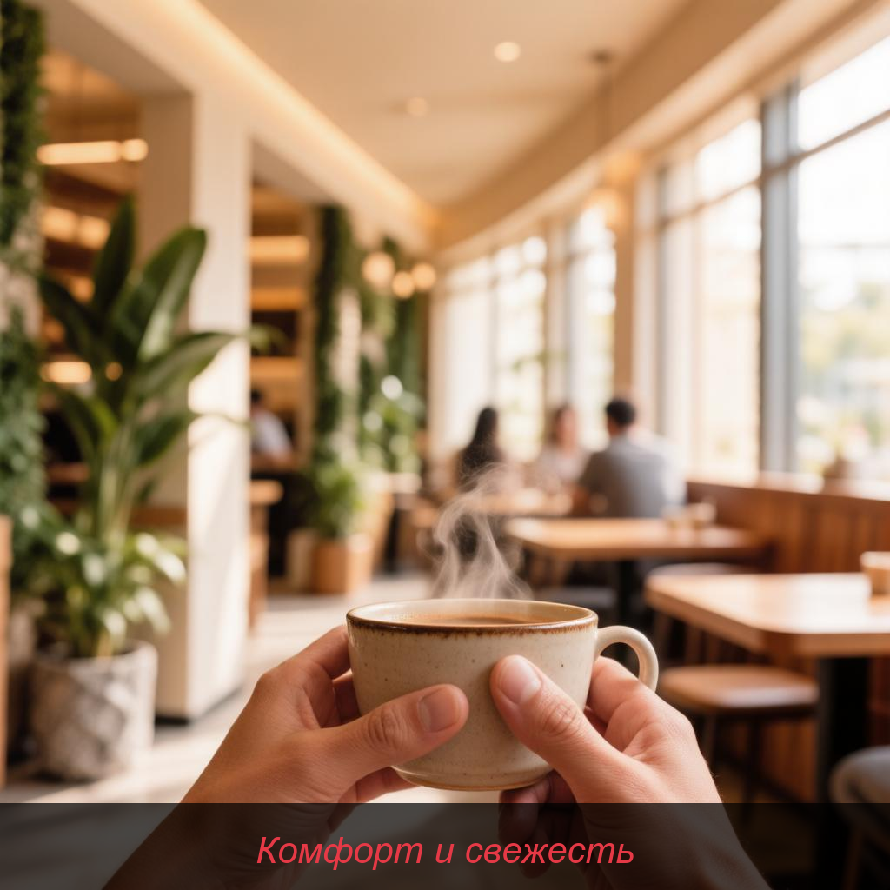

Почему выбирают нас?

Мы гордимся своим рестораном-террасой, который сочетает в себе безупречный сервис, свежие ингредиенты и приятную атмосферу. Наслаждайтесь блюдами от наших талантливых шеф-поваров прямо на открытом воздухе.
- ✓ Свежие местные продукты
- ✓ Кухня мирового уровня
- ✓ Живописная терраса